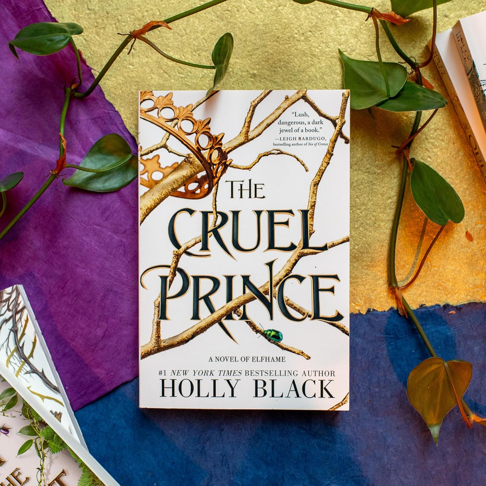
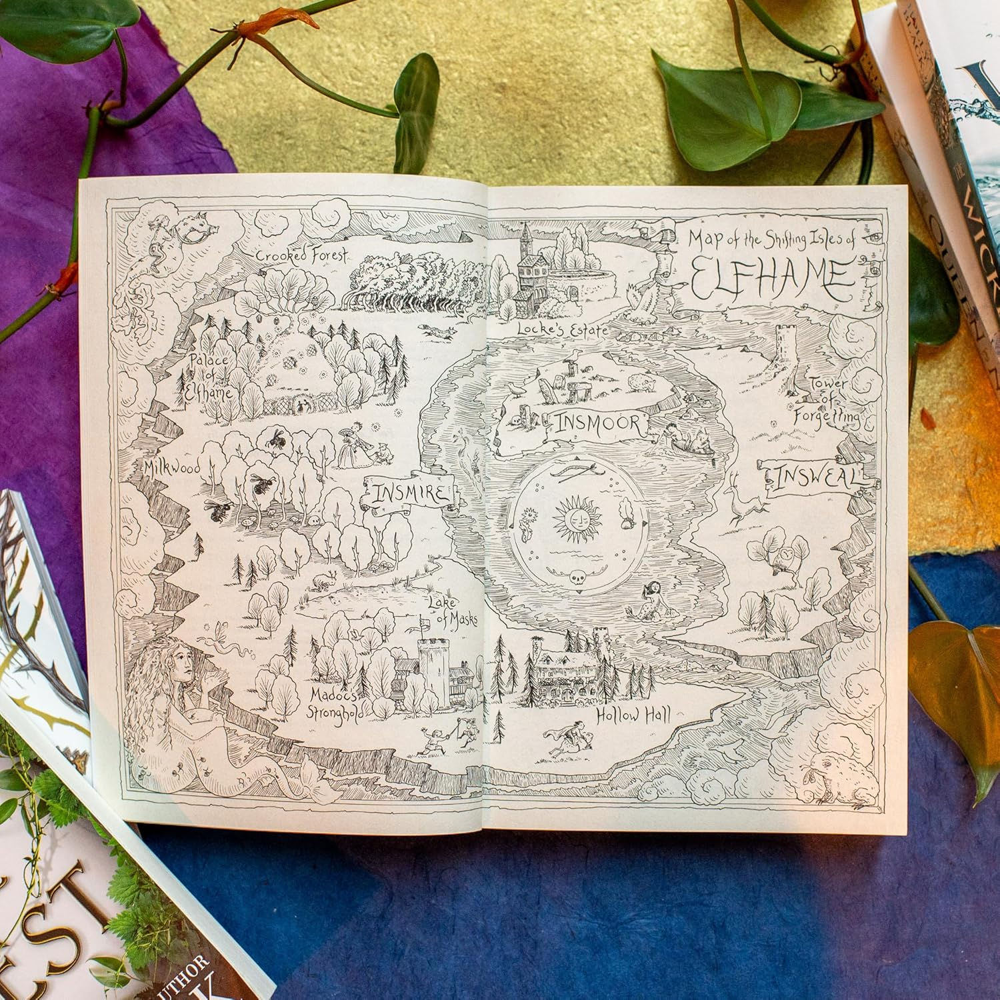
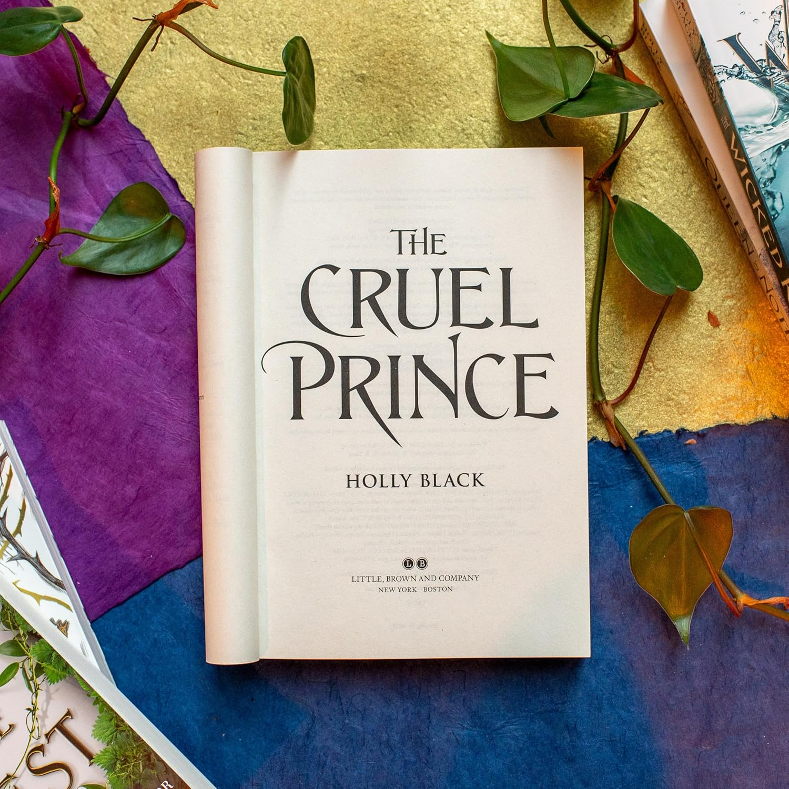

The Cruel Prince
by Holly Black
| December 4, 2018
$23.99

Summary
Of course I want to be like them. They're beautiful as blades forged in some divine fire. They will live forever.
And Cardan is even more beautiful than the rest. I hate him more than all the others. I hate him so much that sometimes when I look at him, I can hardly breathe.
Jude was seven years old when her parents were murdered and she and her two sisters were stolen away to live in the treacherous High Court of Faerie. Ten years later, Jude wants nothing more than to belong there, despite her mortality. But many of the fey despise humans. Especially Prince Cardan, the youngest and wickedest son of the High King.
To win a place at the Court, she must defy him--and face the consequences.
In doing so, she becomes embroiled in palace intrigues and deceptions, discovering her own capacity for bloodshed. But as civil war threatens to drown the Courts of Faerie in violence, Jude will need to risk her life in a dangerous alliance to save her sisters, and Faerie itself.